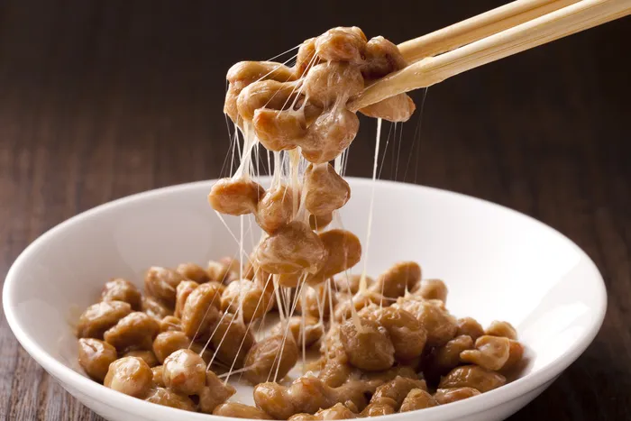

낫또 - 일본
일본의 전통음식 중 하나. 한자로는 납두(納豆)라 표기한다. 만드는 과정의 상당 부분이 한국의 청국장과 흡사하며, 발효에 이용되는 균류도 동일한 음식이다. 다만 청국장은 발효가 완료된 후 소금, 생강, 마늘로 간을 해서 빻아 뭉쳐 보관하고 끓여서 먹는 반면, 낫토는 발효가 완료된 것을 휘저은 다음 생으로 먹는다.
일본의 전통음식 중 하나. 한자로는 납두(納豆)라 표기한다. 만드는 과정의 상당 부분이 한국의 청국장과 흡사하며, 발효에 이용되는 균류도 동일한 음식이다. 다만 청국장은 발효가 완료된 후 소금, 생강, 마늘로 간을 해서 빻아 뭉쳐 보관하고 끓여서 먹는 반면, 낫토는 발효가 완료된 것을 휘저은 다음 생으로 먹는다.
마카로니에 치즈와 크림을 버무려 만든 영미권 요리
에스카르고의 유래는 고대 로마 시대로 거슬러 올라갑니다. 고대 로마인들은 달팽이를 식용으로 사용했으며, 달팽이를 버터, 마늘, 허브 등으로 볶아 먹었습니다. 중세 시대에는 프랑스에서 에스카르고가 귀족들의 전유물이 되었습니다. 귀족들은 에스카르고를 진미로 여겼으며, 다양한 방법으로 요리해 먹었습니다. 현대적인 에스카르고는 19세기부터 만들어지기 시작했습니다. 당시에는 달팽이의 내장을 제거하고, 버터, 마늘, 파슬리 등으로 볶아 먹는 방식이 보편화되었습니다.
스페인과 포르투갈 및 중남미,필리핀과 미크로네시아의 요리. 이름의 뜻은 '속을 채워 넣은 빵'이고, 만두의 일종이라 할 수 있다.
민물가재를 이용해서 만드는 중국 음식. 마라샤오룽샤(麻辣小龍蝦): 마라소스가 들어가는 샤오룽샤다. 줄여서 마라룽샤라고 불리는 경우가 많다. 훙샤오샤오룽샤(紅燒小龍蝦): 간장 베이스인 훙샤오(紅燒, 홍소)라는 양념을 이용해서 만드는 샤오룽샤다.
베이킹 팬에 굽는 납작한 초콜릿케이크. '초콜릿브라우니'가 정확하지만 브라우니라는 약칭이 널리 사용되고 있다. 진한 초콜릿의 단맛과 쫀득하고 부드러운 버터 맛이 특징
퐁듀의 본고장으로 알려진 곳은 스위스 서부 발레주(Valais)주의 체르마트(Zermatt)입니다. 체르마트는 해발 1,600m에 위치한 산악 마을로, 알프스 최고봉인 마테호른(Matterhorn)이 있는 곳으로도 유명합니다. 체르마트에서는 퐁듀를 맛볼 수 있는 레스토랑이 많으며, 퐁듀를 전문적으로 만드는 퐁듀 마스터(Fondue Master)도 있습니다. 퐁듀의 종류는 크게 치즈 퐁듀와 초콜릿 퐁듀로 나눌 수 있습니다. 치즈 퐁듀는 치즈, 화이트 와인, 버터, 가루 등을 섞어 만든 소스를 끓여서 빵이나 채소를 찍어 먹는 요리입니다. 치즈 퐁듀의 대표적인 재료로는 그뤼에르 치즈(Gruyère cheese), 퐁듀 치즈(Fontina cheese), 에멘탈 치즈(Emmental cheese) 등이 사용됩니다. 초콜릿 퐁듀는 초콜릿, 크림, 버터, 설탕 등을 섞어 만든 소스를 끓여서 과일, 쿠키, 비스킷 등을 찍어 먹는 요리입니다.
산꼬초는 고기, 감자, 유까, 익은 플라타노, 당근 옥수수 등 여러가지 재료를 하나로 가득 담아서 만든 스프이다. 사용되는 고기의 종류에 따라 다양한 산꼬초가 있습니다.
베트남어: Phở [fəː˧˩˧] 베트남의 쌀국수 요리. 한국에서는 '퍼'라는 이름 대신 보통 월남 쌀국수, 베트남 쌀국수, 아니면 Phở를 영어식으로 읽은 '포'라고 부른다. 쇠고기나 닭고기로 낸 고기 국물에 넓적한 쌀국수를 말아먹는 요리. 쇠고기가 들어간 것은 '퍼 보', 닭고기가 들어간 것은 '퍼 가'로 구분한다.

코카나무의 잎과 콜라나무 열매에서 추출한 원액에 캐러멜 색소와 여러 첨가물을 넣고 탄산을 더해 만든 탄산음료
슈바인스학세(Schweinshaxe)는 돼지 다리를 구워서 만드는 독일 바이에른 지방의 요리이다. 독일어를 글자 그대로 풀이하면 돼지(Schwein)+무릎(Hạ̈chse → Haxe). 한국에서 가장 유명한 독일 요리중 하나이다. 정작 바이에른에서는 슈바인스학슨(Schweinshaxn)이라는 이름으로 불린다. 독일의 일부 지방에서는 아이스바인(Eisbein)이라고 부른다. 오스트리아에서는 슈텔체(Stelze)라고 부른다.
바칼랴우는 포르투칼어로 "대구"를 뜻하는 말이다. 대구살 살, 감자, 달걀, 양파, 파슬리를 넣어 만든 어묵의 일종으로, '바칼랴우 프리터'나 '바칼랴우 크로켓'등으로 불리기도 한다.
김치는 한민족의 전통 발효식품이자 일종의 조리 양식이다. 소금물에 절이고 발효시켜 보관성을 높인 채소를 갖은양념으로 맛을 내어 먹는다. 다른 수식어 없이 '김치'라고만 말하면 김장배추를 고추가루로 빨갛게 만든 남부지방식 배추김치를 주로 말한다. 또한 배추김치가 세계적으로 가장 유명하다. 이런 맵고 짠 김치 외에도 다양한 종류의 김치가 존재하는데, 무를 절여서 만든 총각김치나 깍두기, 오이로 만든 오이소박이, 과거의 서울이나 현 북부지방에서 김치 하면 주로 떠올렸던 백김치 등의 김치도 존재한다.
익히지 않은 해산물과 채소를 소스에 버무려 만드는 하와이 전통 음식. 포케는 하와이어로 '자르다', '십자형으로 조각내다'라는 뜻이다. 깍둑썰기한 생선회를 소스에 절인 뒤 각종 채소와 견과류를 곁들여 먹는다. 에피타이저로 먹거나 메인 디시로 먹으며, 후자의 경우 밥 위에 얹어먹을 수도 있다. 그릇에 밥을 함께 담아 파는 경우 포케 보울(bowl)이라고 부르기도 한다. 보통은 보울로 먹지만 익혀서 반찬으로 먹기도 한다. 간이 이미 되어 있는 상태라 그대로 팬에 기름 두르고 익히면 된다.
비너 슈니첼의 유래는 정확하게 알려져 있지 않지만, 19세기 초반에 오스트리아의 수도 빈에서 처음으로 만들어진 것으로 추정됩니다. 당시 오스트리아는 유럽의 강대국으로, 다양한 문화가 교류하는 도시였습니다. 비너 슈니첼은 이러한 문화적 교류의 결과로 탄생한 것으로 보입니다.
타코는 토르티야라고 불리는 옥수수나 밀가루를 반죽해서 구워 만든 얇은 무발효빵에 고기 또는 해물, 잘게 썬 양파, 로메인, 고수, 치즈 등을 얹어서 살사를 끼얹어 싸 먹는 대표적인 멕시코 요리이다.